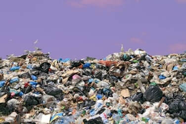

Objetivos generales
Tenemos como objetivo concientizar a la humanidad, mostrando las grandes barreras que existen entre los distintos continentes, los distintos mundos que tienen las personas debido a las situaciones que surgen de forma global, debido a estados, industrias, etc. Mostrar al lector que, debido a ciertos actos benéficos para el mismo, pueden afectar a otros países junto con sus civiles. Así mismo, este blog posee la finalidad de que los lectores puedan documentarse y proponer ideas o soluciones que ayuden a eliminar estos problemas sociales.
¿ Que es la contaminacion ambiental ?
Se denomina contaminación ambiental a la presencia de componentes nocivos (ya sean químicos, físicos o
biológicos) en el medio ambiente (entorno natural y artificial), que supongan un perjuicio para los
seres vivos que lo habitan, incluyendo a los seres humanos. La contaminación ambiental está originada
principalmente por causas derivadas de la actividad humana, como la emisión a la atmósfera de gases de
efecto invernadero o la explotación desmedida de los recursos naturales.
El planeta nos recuerda continuamente, y cada vez de forma más recurrente, que si alteramos su
equilibrio, las consecuencias son devastadoras a través de sequías, mega incendios, inundaciones,
pérdida de la biodiversidad y desastres naturales cada vez más feroces. El cambio climático ya es una
realidad y miles de personas, animales y plantas sufren sus efectos.
La contaminación no es más que un aliciente que hace que la crisis climática avance sin control. Nos
referimos a contaminación ambiental al ingreso de sustancias químicas nocivas en un entorno
determinado. Este fenómeno repercute en el equilibrio de dicho entorno y lo convierte en un ambiente
inseguro.
El medio ambiente y sus ecosistemas sufren de manera directa los perjudiciales efectos. Y es que la
contaminación ambiental es una alternación negativa del estado natural de los seres vivos que habitan
el planeta. Las causas de este tipo de contaminación dependen de varios agentes que varían según el
ecosistema al que afecten.
¿ Como se produce esta ?
Las fuentes antropogénicas que generan mayor contaminación ambiental son las siguientes:
• Tala excesiva de árboles.
• Emisiones y vertidos industriales a la atmósfera y a la hidrosfera.
• Extracción, procesamiento y refinamiento de combustibles fósiles (petróleo, carbón y gas natural).
• Producción de energía con combustibles fósiles y otras fuentes no renovables.
• Uso excesivo de automóviles y otros medios de transporte impulsados por gasolina o diésel.
• Uso indiscriminado de plásticos y otros materiales derivados del petróleo.
• Liberación de plásticos y objetos no biodegradables en espacios naturales.

¿ Quien descubrió la contaminación ambiental ?
Clair Cameron Patterson, nació y creció en Mitchellville, Iowa, cerca de Des Moines, el 2 de junio de 1922. Su padre, a quien describe como «un escéptico intelectual escocés», era un trabajador postal. Su madre estaba interesada en la educación y se desempeñó en la junta escolar. Un conjunto de química, que ella le dio a una edad temprana, parece haber comenzado una atracción de por vida a la química. Asistió a una pequeña escuela secundaria con menos de 100 estudiantes, y luego se graduó de Grinnell College con una licenciatura A. B. en química. Allí conoció a su futura esposa, Lorna McCleary. Se mudaron a la Universidad de Iowa para un trabajo de posgrado, donde Pat hizo una tesis de maestría en espectroscopía molecular (Ver artículo: ¿Qué inventó Albert Einstein?) Después de su graduación en 1944, Clair Patterson y Laurie, su esposa, fueron enviados a Chicago para trabajar en el Proyecto Manhattan (bomba atómica) en la Universidad de Chicago por invitación del profesor George Glockler, para quien Pat había realizado su investigación M. A. Después de varios meses allí, decidió alistarse en el ejército, pero la junta de reclutamiento lo rechazó debido a su alta calificación de seguridad y lo envió de regreso a la Universidad de Chicago. Allí se decidió que la pareja irían a Oak Ridge, Tennessee, para continuar trabajando en el Proyecto Manhattan. En Oak Ridge, Patterson trabajó en la planta de separación electromagnética 235U y se familiarizó con los espectrómetros de masas.

El aporte mas importante acerca del medio ambiente
Uno de sus aportes mas importantes fue su descubrimiento de los niveles de contaminación por plomo en la superficie terrestre. Su trabajo en este tema llevó a una reevaluación total del crecimiento de las concentraciones industriales de plomo en la atmósfera y el cuerpo humano, y su posterior campaña fue fundamental en la prohibición del tetraetilplan en la gasolina y la soldadura de plomo en latas de alimentos.
¿Que dicen algunos cientificos acerca de la contaminacion ambiental?
La contaminación atmosférica acorta la esperanza de vida de la población en todo el mundo “mucho más
que las guerras y otras formas de violencia, enfermedades parásitas o el tabaco”, según los resultados
de una nueva investigación realizada por el Instituto Max Planck y el Departamento de Cardiología de la
Universidad de Mainz, en Alemania. El impacto en la salud estaría siendo de tal magnitud que los
investigadores consideran que el mundo se está enfrentando a una pandemia por contaminación del aire.
Un dato: mientras el tabaco reduce la esperanza de vida en 2,2 años, la polución la acorta en cerca de
tres años, según esta investigación, que utiliza un nuevo método por el que se crean modelos para
cruzar los efectos de varias fuentes de contaminación en los índices de mortalidad.
Causas de la contaminacion ambiental
Los pesticidas y productos químicos Los productos que se usan en la agricultura y en la industria convencional liberan enormes cantidades de gases de efecto invernadero, que son causantes directos del deterioro de la capa de ozono y del cambio climático. También perjudican el estado de los suelos destinados al cultivo y las fuentes de agua. En este sentido, la Organización Mundial de la Salud señala el riesgo del uso de sustancias químicas como los plaguicidas, debido a su capacidad de permanecer en el agua y el suelo durante años. Pero también resalta que pueden resultar tóxicos para el ser humano.
La deforestacion
Los árboles ayudan a purificar el aire. Sin embargo, en las últimas décadas hemos asistido a la desaparición de cientos de bosques en el mundo. Se calcula que cada año desaparece una extensión similar al territorio de Panamá o Portugal. Ante este panorama, los efectos de los gases que se encuentran en el aire son más notorios y pueden causar graves enfermedades para las especies terrestres. Y no digamos, como a veces dicen nuestros hijos e hijas, “yo no he sido”, porque la ONG Mighty Earth indicaba recientemente que existe una estrecha relación entre la deforestación y la alimentación, ya que, por ejemplo, se están extendiendo los monocultivos de soja (más de un 70% de la producción mundial de soja se destina a pienso para la ganadería).Los desechos industriales y domesticos
El consumo masivo promueve procesos industriales en cadena que pasan por alto la protección del medio ambiente. Los desechos que se generan tras estos procesos son una de las principales causas de la contaminación
Los combustibles fosiles
La excesiva explotación del carbón, el petróleo y el gas natural, entre otros, genera altos índices de contaminación, no solo en el aire sino en los entornos en donde se extraen tales recursos. Hasta la fecha, ninguna convención internacional ha logrado trazar un límite claro entre el desarrollo sostenible y el cuidado de la Tierra. Sin embargo, los 17 Objetivos de Desarrollo Sostenible de la ONU sí ponen el foco en esta cuestión: fomentar un desarrollo que no ponga en peligro los recursos ni el bienestar de las generaciones venideras.

Las consecuencias medioambientales mas alarmantes de la economia actual
Según afirma la Organización para la Cooperación y el Desarrollo Económico (OCDE), si el modelo
económico continúa funcionando como lo hace, la situación medioambiental del planeta se agravará
notablemente. El diario Green Biz recoge las diez consecuencias medioambientales más alarmantes que se
derivan del modelo económico actual:
Energía:
la demanda energética mundial será un 80% mayor en 2050, y sin un cambio en las políticas, el 85% de
esta energía procederá de los combustibles fósiles.
Emisiones:
las emisiones de gases a la atmósfera se incrementarán en un 50%, por lo que la concentración de gases
de efecto invernadero podría alcanzar las 685 partículas por millón, cuando los científicos establecen
que 450 ppm ya exponen al planeta a los graves consecuencias climáticas.
Temperatura:
si no se producen cambios en la gestión económica y política, el planeta experimentará un aumento de de
temperatura de hasta 6 grados en 2050, sobrepasando con creces el máximo de 2 grados de aumento sobre
la temperatura actual que los científicos establecen como seguros.
Biodiversidad: la biodiversidad terrestre se reducirá en un 10% en 2050, con notables pérdidas en Asia, Europa y Sudáfrica.
Bosques: esta reducción de la biodiversidad vendrá dada especialmente a por el descenso de la masa forestal que se espera para entonces. Un estudio de las Naciones Unidas relativo a la Economía y a los Ecosistemas y Biodiversidad estima que la reducción de los bosques generará una pérdida económica de hasta 5 trillones de dólares anuales.
Agua: si la demanda mundial de agua se incrementa lo esperado (un 55%), la consumición industrial será un 400% mayor que la actual, lo que implicará que el 40% de la población mundial vivirá en zonas con escasez de agua.
Acciones para cuidar el medio ambiente
Cuida el agua
El agua es el elemento más importante para la vida; sin embargo, es un recurso limitado que cada vez se
agota más. En el mundo hay más de 3 mil millones de personas sin acceso a agua. En Perú, según el INEI,
el 94.8% de la población en zonas urbanas tiene acceso al agua mientas en la zona rural solo el 76.3%.
Sin embargo, por los efectos del cambio climático, el agua está disminuyendo en muchas zonas del país.
Por este motivo, cada persona debe asumir una cultura de ahorro y consumo racional. Por ejemplo,
podemos tomar duchas cortas de máximo cinco minutos, evitar dejar correr el agua al realizar
actividades como lavarse los dientes, afeitarse, lavarse el cabello o enjabonarse, y revisar
constantemente las cañerías y cisternas del inodoro para arreglar cualquier fuga. En las zonas rurales,
debemos evitar lavar vehículos directamente en los ríos o quebradas y mantener cerrados los grifos.
Reduce el consumo de energía
En nuestra vida cotidiana y, especialmente en el contexto de aislamiento social, utilizamos cada vez
más la energía eléctrica. Este abuso de energía trae como consecuencia estragos en el equilibrio del
medio ambiente. A mayor demanda de energía, más liberación de CO2 a la atmósfera. Igualmente, se
incrementan los proyectos hidroeléctricos para atender la demanda y se afectan ecosistemas estratégicos
en el país y también a sus poblaciones. Aunque no podemos detener el cambio climático, sí podemos
reducir su impacto con acciones como: cambiar los focos comunes por lámparas fluorescentes, aprovechar
al máximo la luz natural, desenchufar los aparatos eléctricos que no usamos, y utilizar
electrodomésticos como lavadoras y refrigeradoras con eficiencia energética.
Recicla
Nuestro planeta se está llenando de residuos sólidos que contaminan el aire, el suelo y el agua. El uso
de plástico le está pasando factura al planeta, pues termina en el mar formando mares de microplástico
contaminante que disminuyen la vida marina y por tanto, el recurso pesquero. Todas las personas podemos
cuidar el medio ambiente separando nuestros residuos en diferentes contenedores, ya sean orgánicos,
papel, plástico o vidrio. Además, en muchos lugares de la ciudad podemos llevar pilas o aceite de
cocina usado. Evitemos el uso del plástico de un solo uso.